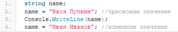
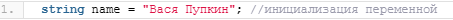
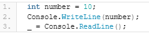

Содержание:
В общем случае, вне зависимости от языка программирования, переменной является именованная область памяти в которой хранятся какие-либо данные приложения. При работе над какой-либо программой мы так или иначе задействуем в работе переменные различного типа. В этой статье мы рассмотрим какие переменные бывают в C# и попробуем написать ещё одно приложение, демонстрирующее полученные нами знания в C#.
В самом общем случае, переменная в C# определяется следующим образом:
тип имя;
то есть вначале идёт тип переменной, а затем — её имя. Про типы переменных мы поговорим позднее, а пока рассмотрим правила именования переменных в C#. Итак, имя переменной в C#:
Для присвоения значения переменной мы используем следующую конструкцию:
имя_переменной = значение
то есть, в отличие от того же Delphi, в C# математический символ = используется именно для присвоения значения переменно. Так, например, в коде выше мы присвоили переменной name значение «Вася Пупкин». При этом, мы можем в любой момент времени изменить значение переменной, например, так:

В C# мы можем сразу при объявлении переменной присвоить ей значение — инициализировать переменную, например, вот так:

Каким вариантом работы с переменными воспользоваться — решать только вам.
Язык C# имеет статическую типизацию. Это означает, что переменная, или возвращаемое значение функции связывается с типом в момент объявления и тип не может быть изменён позже. Например, в C# мы не сможем сделать следующее:
string name = "Вася Пупкин"; //инициализация переменной
name = 13; //пробуем присвоить число переменной типа string
так как изначально мы определили, что переменная name имеет тип string.
Однако, начиная с версии C# 3.0 стало возможным определять неявно типизированные локальные переменные. Это не в коем случае не означает, что для переменной не будет определен тип, просто тип переменной определяется компилятором при инициализации переменной.
Для того, чтобы объявить неявно типизированную переменную в C# используется ключевое слово var . Например, в приведенном ниже фрагменте кода обе переменные будут эквивалентны и иметь один и тот же тип:
int number = 10;
var age = 18;
В отличие от обычных переменных (с явно указанным типом), неявно типизированные переменные должны быть сразу инициализированы. Так, следующим код приведет к ошибке:
var age;
age = "Вася";
Начиная с версии 7.0 язык C# поддерживает пустые переменные. Это временные фиктивные переменные, которые намеренно не используются в коде приложения. Пустые переменные эквивалентны переменным, которым не присвоены значения.
Так как пустая переменная по сути всего одна и этой переменной может даже не выделяться память, пустые переменные помогают расходовать память более экономно.
Эти переменные делают код яснее, повышают его читаемость и упрощают его поддержку.
В C# пустая переменная определяется символом нижнего подчеркивания «_».
Использование пустых переменных — это отдельная тема о которой мы ещё успеем поговорить. Пока же приведу небольшой код в котором используется пустая переменная:

По сути, последняя строка — всего лишь «заглушка» позволяющая держать окно консоли открытым пока пользователь не нажмет кнопку Enter, однако сам по себе метод ReadLine() возвращает строку (string) введенную пользователем. И так как нам эта строка абсолютно не требуется мы передаем её в пустую переменную.
Сегодня мы разобрались с тем, что из себя представляют переменные, как объявляются и инициализируются переменные в C#, а также затронули такие интересные моменты языка C# как объявление неявно типизированных и пустых переменных.